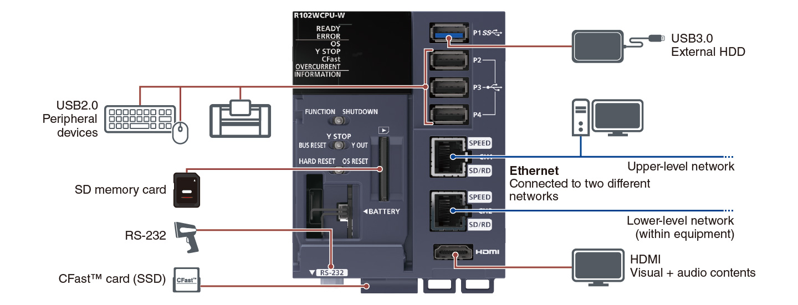

Controllers MELSEC iQ-R Series Product features -CPU-

MELSECWinCPU Module
The MELSECWinCPU module executes Windows® applications and realizes data coordination with other CPU modules and I/O modules easily. Equipped with robust features, the module offers a stable computer-based system even in a harsh environment. A fan-less hardware design enables natural cooling operation, eliminating the risk of operation stop due to a fan failure.
Features<sup>A wide selection of interfaces</sup>
- General interface
- Equipped with interfaces similar to a computer, the system can be easily configured with widely available devices
- Built-in USB ports, two Ethernet ports, RS-232, and HDMI are available, also with CFast™ card and SD memory card for storage are supported

Information processing utilizing Windows®
- Utilization of Windows®
- Multiple CPU configuration
- Utilization of development assets
- Utilizing the familiar Windows® assets in the office, information processing such as control data calculation/processing and data exchange with a computer are possible
- The module, which is incorporated into the multiple CPU configuration, can easily add functions utilizing Windows® to the existing equipment
- Easy-to-understand development environment such as Microsoft® Visual Basic® and Visual C#® as well as existing development assets can be utilized
IT system is easily configured utilizing pre-installed functions
- Easy IT system configuration
- The IT system on the production site can be configured using Microsoft® Visual Studio® development environment
- The MELSECWinCPU module can easily communicate with the programmable controller system by using pre-installed functions (C Controller module dedicated functions and MELSEC communication functions)
- A computer is no longer necessary in the production site, therefore eliminating any issues of LAN installation
On-site development reduces risk of data breach
- Robust security
- Due to growing security concern, it is becoming increasingly difficult to bring computers to the production site. The MELSECWinCPU module is an excellent alternative to a computer
- Installing the MELSECWinCPU module in the control panel can reduce the risk of technology and data theft as well as virus invasion
- When the engineering software is installed and a keyboard, mouse and display are connected, urgent maintenance is easily handled

Specifications
MELSECWinCPU module specifications
| Item | R102WCPU-W |
|---|---|
| Hardware | |
| MPU | Intel Atom® E3930 Dual Core |
| Main memory (byte) | 4G |
| Internal storage (CFast™) (byte) | 60G |
| Software | |
| OS | Windows® 10 IoT Enterprise LTSC 2019 |
| Programming language | C/C++, Visual Basic®, C# |
| Communication interface | |
| Extension SSD | CFast™ (SATA Ⅲ) (1x) |
| USB | USB3.0 (1x)/USB2.0 (3x) |
| Ethernet | 1000BASE-T/100BASE-TX/10BASE-T (2x) |
| SD memory card | SDHC High Speed (1x) |
| Display | |
| Interface | HDMI 1.4b (1x) |